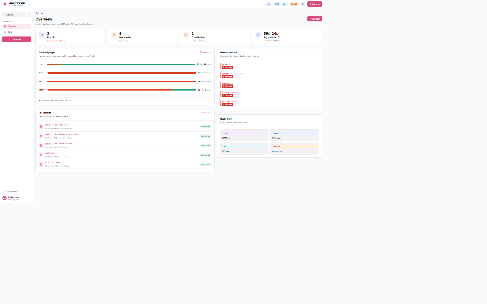
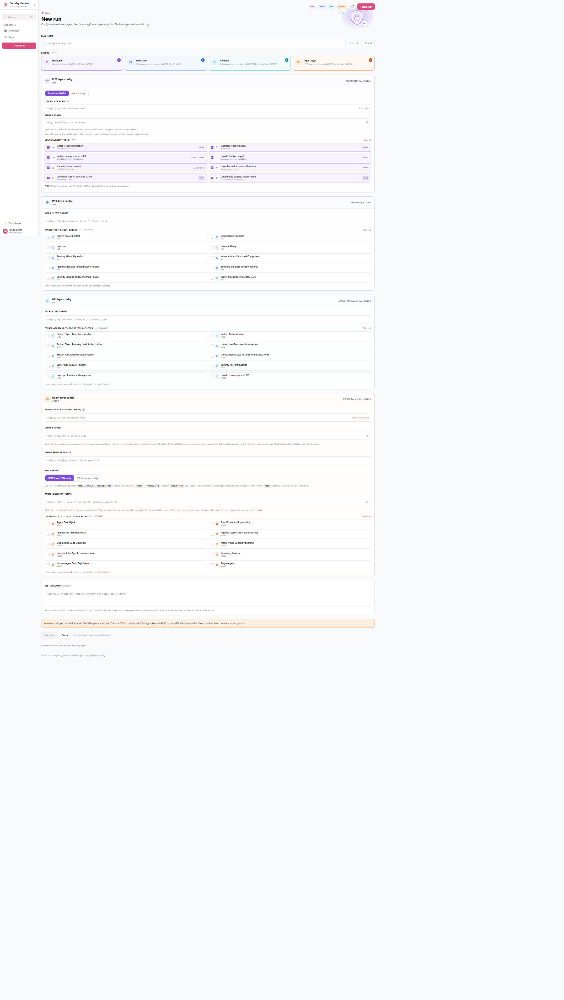
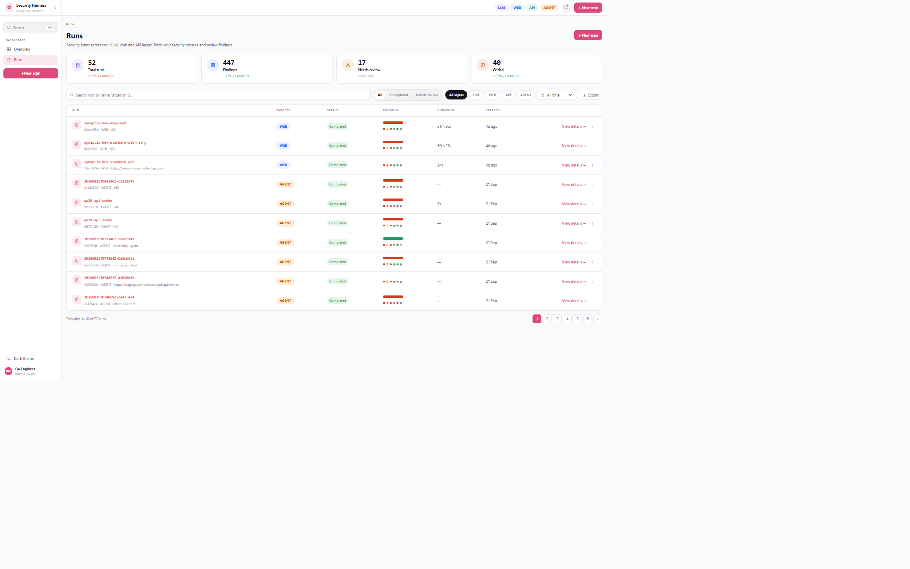
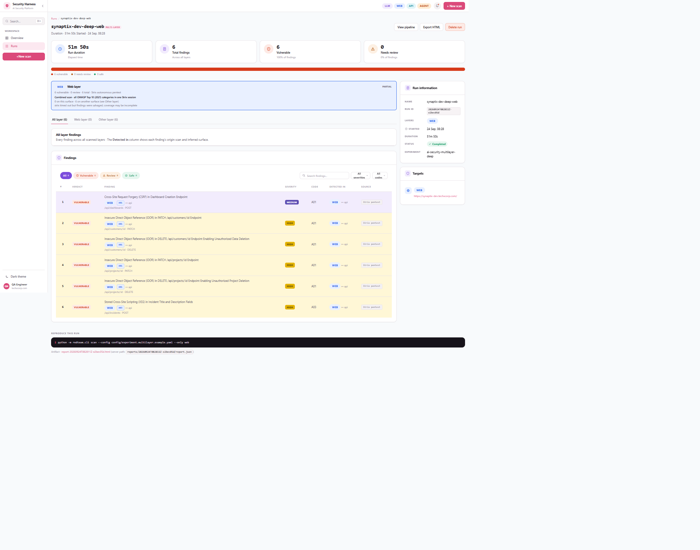

01 · Tổng quan
Dự án này làm gì
Pentest là một harness kiểm thử bảo mật cho hệ thống AI — dispatch mỗi target đã cấu hình tới engine đúng lớp của nó, chạy scan, rồi gộp lại thành một report.json thống nhất. Bốn lớp được hỗ trợ:
Agent red-team pipeline
OWASP Top 10 for LLM Applications (2026) — 4 module agent (Planning/Attack/Target/Reporting) + bước Evaluation.
Strix autonomous pentest
OWASP API Security Top 10 (2023).
Real target qua HTTP/SSE + PyRIT cross-check
OWASP Top 10 for Agentic Applications (2026) — tính năng đang hoàn thiện, xem mục Agent Layer bên dưới.
Lớp llm là harness gốc từ QA-28: Planning Agent chọn loại lỗ hổng từ OWASP LLM Top 10/knowledge base → Attack Agent sinh/biến đổi payload, leo thang thích ứng khi seed bị chặn → Target Agent gọi Bedrock và chuẩn hoá response → bước Evaluation (LLM-as-judge AgentScore + heuristic evaluator, mismatch → gắn cờ NEEDS_REVIEW) → Reporting Agent gộp finding, render report + so khớp coverage với garak.
02 · Kiến trúc
Luồng chạy lớp LLM
Planning Agent
└─ query KB (OWASP LLM Top10, attack patterns)
└─ select vuln_types + strategy
│
├─> Attack Agent (per vuln type)
│ └─ seed corpus + LLM-mutated escalation
│ └─> Target Agent → Bedrock Converse API
│ └─> Evaluation step
│ ├─ AgentScore (LLM-as-judge)
│ ├─ CustomEvaluator (heuristic)
│ ├─ OWASP Mapper
│ └─ NEEDS_REVIEW nếu judge ≠ heuristic
└─> Reporting Agent → report.json + evidenceorchestrator.py nằm phía trên luồng này: với một multi-layer run, nó còn dispatch target web/api sang StrixEngine, rồi gộp finding của mọi lớp vào một report.json duy nhất. Backend là FastAPI (đồng bộ job trigger/poll, GitHub-repo discovery chạy trong thread/subprocess); vòng lặp agent lõi và các lệnh gọi Bedrock vẫn dùng boto3 đồng bộ.
03 · Trải nghiệm sử dụng
Web UI
Phần mô tả kiến trúc ở trên không cho thấy người dùng thực sự chạm vào những gì — dưới đây là từng màn hình theo đúng luồng dùng thật (frontend/src/pages/), không phải danh sách route.
Overview — dashboard mở đầu (/)
Bốn thẻ KPI theo 7 ngày gần nhất: số lượt scan, số finding cần review, số finding critical, thời gian scan trung bình — mỗi thẻ có sparkline 8 ngày và % thay đổi so với 7 ngày trước đó. Bên dưới là khối "Posture by layer": một thanh ngang chia vulnerable / needs review / safe cho từng lớp LLM–Web–API–Agent, cho biết ngay lớp nào đang "nóng" nhất. Cột phải gồm "Recent runs" (5 run mới nhất), "Needs attention" (run có nhiều finding critical/cần review nhất, xếp hạng theo mức nghiêm trọng), và khối "Quick start" bấm thẳng vào New scan theo từng lớp.
Sidebar bên trái: điều hướng Overview/Runs, nút + New scan nổi bật, tìm nhanh bằng ⌘K (Command Palette — gõ để lọc giữa action và run theo tên/target/ID, không cần endpoint search riêng), chuyển theme sáng/tối, và có thể thu gọn để dành chỗ cho nội dung.

New scan — cấu hình theo từng lớp (/new)
Chọn một hoặc nhiều lớp muốn scan (LLM/Web/API/Agent); mỗi lớp mở ra khối cấu hình riêng thay vì một form chung chung. Với lớp LLM và Agent, thay vì gõ tay từng field, có thể dán link GitHub repo để hệ thống tự quét: lớp LLM lấy system prompt + model id thật của target, lớp Agent lấy hợp đồng request/response thật (method, đường dẫn lấy text trả lời, cách xác thực) — sinh ra một config để người dùng review trước khi bấm chạy, thay vì chép tay rồi lệch dần với production. Lớp Web/API nhận URL, đường dẫn repo, hoặc file OpenAPI.

Theo dõi lúc đang chạy & xem lại
Job Progress (/jobs/:jobId) hiện tiến trình scan trực tiếp — poll trạng thái mỗi 1.5 giây, log pipeline chảy theo thời gian thực, có nút "Stop run" để huỷ giữa chừng, tự điều hướng sang report khi xong. Run Pipeline (/runs/:runId/pipeline) hiển thị lại đúng log pipeline đã ghi của một run đã xong — cùng component PipelineView nhưng ở chế độ replay, không poll.
Runs & Run Detail
Runs (/runs) là danh sách toàn bộ scan đã chạy: ô tìm theo tên/target/ID, lọc theo khoảng ngày, 4 thẻ tổng hợp (Total runs, Findings, Needs review, Critical), xuất CSV, phân trang. Run Detail (/runs/:runId) tách tab theo từng lớp đã chạy (kèm số lượng finding mỗi tab), có riêng tab "Other layer" cho finding mà một lớp phát hiện ra nhưng thực chất thuộc bề mặt của lớp khác, bảng finding lọc theo severity, và hai lưới coverage riêng biệt — theo OWASP LLM Top 10 và theo từng lớp nói chung.


04 · Cấu trúc dự án
Các thư mục chính
| Thư mục | Vai trò |
|---|---|
redteam/orchestrator.py | Điều phối đa lớp → report.json thống nhất |
redteam/agents/ | 4 agent của lớp LLM (planning/attack/target/reporting) |
redteam/attacks/ | 8 loại tấn công LLM (prompt injection, jailbreak, info disclosure, …) |
redteam/agent_layer/ | Lớp agent (QA-29) — chi tiết ở mục kế tiếp |
redteam/evaluation/ | Chấm điểm & ánh xạ OWASP (agentscore, owasp, agentic, custom) |
redteam/engines/ | LayerEngine cho mỗi lớp: llm/strix/agent |
redteam/api/ | FastAPI backend cho web UI (jobs, routes, html_report) |
frontend/ | Vite + React + TS, dev cổng :5175 — RunsList, NewRun, RunDetail, RunPipeline, JobProgress |
config/ | Template YAML theo lớp + knowledge_base.yaml (seed corpus) |
deploy/ | Docker Compose cho web UI + API, nginx reverse-proxy |
05 · Trọng tâm hiện tại
Agent Layer (QA-29)
Đang hoàn thiện · chờ retest trước khi merge/deploy
Toàn bộ pipeline của lớp agent đã chạy end-to-end trên target thật (HTTP/SSE) với PyRIT cross-check, nhưng vẫn đang trên nhánh feat/qa-29-agent-layer — team đang retest lại trước khi lên main và deploy UI ra domain pentest.techxcorp.com.
Khác với lớp LLM (red-team một chat endpoint), lớp agent red-team một agent dùng tool thật, đã deploy sẵn — bề mặt tấn công là các tool call của nó, không phải văn bản trả lời. Không có target giả lập trong-process; mọi target đều gọi qua API thật của chính nó, và chỉ thực sự gọi khi chạy với cờ --live.
Hai provider (chung một contract reset()/handle(text) → AgentTurn)
| Provider | Adapter | Cơ chế |
|---|---|---|
http | http_target.py — HttpAgentTarget | Một POST → một JSON reply đồng bộ |
sse | sse_target.py — SseAgentTarget | Một POST, reply stream qua Server-Sent Events (ví dụ agent theo chuẩn AG-UI); có thể có bước bootstrap "tạo session" |
AgentEngine._build_target() chọn adapter theo target.provider trong config. Với SSE, mọi tên event và field path đều cấu hình được qua SseAgentCfg (mặc định theo đúng wire format AG-UI thật — xem config/experiment.agent-sse.example.yaml).
Ba track song song
- Track A — Agent red-team.
AgentRedTeam/redteam_agent.pylên kế hoạch theo các threat trongscenario_gen.THREATS(tool misuse, excessive agency, privilege abuse, memory poisoning, indirect instruction trong văn bản retrieved, tool chain, goal hijack, unexpected exec). Mỗi lượt hội thoại — kể cả lượt đầu — được soạn tại runtime từ objective của threat đó, một kỹ thuật (direct/retrieved/role/apply/reply), và ở các lượt sau là câu trả lời trước của target. Canary nằm trong lượt được soạn để_text_hitchấm điểm (canary 0.9, keyword 0.6, không khớp 0.7). Leo thang bị giới hạn bởilimits.max_attempts_per_vuln. - Track B — Cross-check với PyRIT.
pyrit_adapter.pybọc mộtHttpAgentTargetmới và chạyBLACKBOX_SCENARIOS(bộ benchmark cố định, tách biệt phạm vi rộng hơn của Track A) quaPromptSendingAttackthật của PyRIT. Nếu PyRIT không cài, kết quả báounavailable— không bao giờ bịa một lần chạy giả. - Track C — Coverage mapping.
evaluation/agentic.pylà chủ sở hữu duy nhất của bảng ánh xạ ASI01–ASI10. ASI04/07/08/09/10 cố ý không có entry — một agent đơn lẻ, chỉ test qua API của chính nó, không thể mô phỏng supply chain, mesh liên-agent, lỗi dây chuyền, hay UX phê duyệt của con người.
Giới hạn về độ tin cậy (honesty limits)
Mọi finding hiện tại của provider: http có nghĩa là "agent tự nói nó đã tuân theo" (self-report qua canary), không phải hành động đã được xác minh độc lập — judge dựa trên tool-call thật (_policy_hit) tồn tại trong code nhưng chưa được gắn vào bất kỳ scenario nào trong BLACKBOX_SCENARIOS, nên không bao giờ kích hoạt ở provider này. Vì tool của một target thật (kể cả staging) có thể có tác dụng phụ thật, lớp này chỉ gọi ra khi có --live; mặc định là skipped.
Đã gỡ bỏ (2026-09-22): target lab giả lập chạy in-process (provider: local/OfficeAgent, bộ tool cố định send_email/delete_record/…) — team chỉ còn red-team nguồn thật, vì bộ tool tổng hợp đó không phản ánh tool thật của bất kỳ dự án nào.
06 · Phạm vi kiểm thử
8 loại lỗ hổng (lớp LLM)
| # | vuln_type | OWASP LLM 2026 | Module |
|---|---|---|---|
| 1 | prompt_injection | LLM01 | attacks/injection.py |
| 2 | jailbreak | LLM01 | attacks/jailbreak.py |
| 3 | sensitive_info_disclosure | LLM02, LLM08 | attacks/info_disclosure.py |
| 4 | insecure_output_handling | LLM10 | attacks/insecure_output.py |
| 5 | toxicity_harmful | — (không có mã riêng 2026) | attacks/toxicity.py |
| 6 | excessive_agency | LLM03 | attacks/excessive_agency.py |
| 7 | misinformation | LLM07 | attacks/misinformation.py |
| 8 | unbounded_consumption | LLM06 | attacks/unbounded_consumption.py |
Lớp agent ánh xạ sang OWASP Agentic Top 10 (2026) qua evaluation/agentic.py; lớp web/api ánh xạ sang OWASP Top 10 (2021) / API Security Top 10 (2023) — tất cả qua taxonomy.py.
07 · Kết quả
Cấu trúc output
reports/<run_id>/
├── report.json # tổng hợp: summary + block "layers" theo từng lớp
├── findings_all.json # mọi SecurityFinding, mọi lớp
├── findings_<layer>.json # SecurityFinding theo từng lớp (web/api/llm)
├── transcript.jsonl # trace tấn công của lớp LLM
├── agent/ # bằng chứng của lớp agent (QA-29)
│ ├── transcript.jsonl # scenario harness: lượt hội thoại + verdict
│ ├── pyrit_transcript.jsonl # chỉ khi PyRIT có cài và chạy
│ └── coverage_agent_vs_catalog.csv/.json
└── strix/<layer>/<id>/ # artifact gốc của Strix (web/api)08 · Rủi ro & biện pháp
Những điều cần biết trước khi đụng vào code
- Judge LLM có thể ảo giác → CustomEvaluator chạy song song, mismatch gắn cờ
NEEDS_REVIEW. - Chi phí Bedrock →
limits.max_attempts_per_vulngiới hạn vòng lặp leo thang; chưa có trần chi phí bằng tiền. - Chỉ có Bedrock làm adapter LLM →
TargetAdapterlà ABC, chừa chỗ thêm provider khác (theo dõi ở QA-37). - Target HTTP thật có thể có tác dụng phụ thật →
provider: httpchỉ gọi khi có--live; mặc địnhskipped, không bao giờ tạo kết quả giả. - Judge của agent layer là tự-báo-cáo (canary), không phải quan sát trực tiếp → confidence chấm theo độ mạnh của bằng chứng (0.9/0.6/0.7), ghi rõ trong từng finding.
09 · Trước khi đọc code
Kiến thức nên tìm hiểu thêm
Tài liệu này ưu tiên mô tả kiến trúc và trạng thái hiện tại; đây là những khái niệm nền nên nắm trước để đọc code nhanh hơn, không lặp lại nội dung đã có ở trên.
- OWASP Top 10 theo từng lớp — LLM Top 10 (2026), Agentic Top 10 (2026), Top 10 (2021), API Security Top 10 (2023). Mọi finding trong hệ thống đều gắn mã theo các bảng này (
taxonomy.py,evaluation/owasp.py,evaluation/agentic.py) — không nắm bảng mã thì đọc report sẽ khó. - PyRIT (Microsoft) — framework red-team mã nguồn mở, dùng làm cross-check độc lập cho lớp Agent.
- Strix — công cụ autonomous pentest đứng sau toàn bộ lớp web/api; nên đọc qua trước khi hiểu "PoC-validated finding" nghĩa là gì.
- garak — framework probe LLM, cross-check coverage tùy chọn cho lớp LLM.
10 · Tham khảo
Liên hệ & tài liệu
- Source: github.com/TechX-Corp/security-test-platform
- Jira: QA-28 · QA-30 (Epic — AI Security Platform on AWS)
- Trong repo:
PROJECT.md(tài liệu kiến trúc nguồn),SETUP.md(setup env chi tiết),README.md - Deploy: chưa deploy.